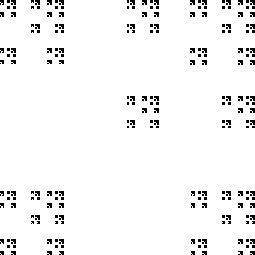
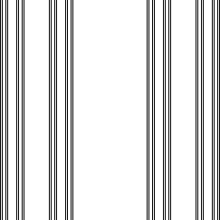

| Find a decomposition of this fractal into smaller copies of itself. |
|  |
| Here's one decomposition, and here's another. |
| Usually, we try to find a decomposition into the smallest number of pieces, keeping in mind that each piece must be a contracted copy of the whole shape. |
| We have already seen one decomposition of this fractal. |
|  |
| When we give up the requirement that the pieces be similar to the whole, new possibilities appear. Here's a decomposition. |
Return to Inverse Problems.